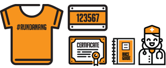

Race Kit pick-up location: Bien Dong Park, Vo Nguyen Giap Street, Son Tra Dist., Danang
City.
Pick-up time: August 11th, 2018
Pick-up time: August 11th, 2018
How to get the race kit:
- Please bring your confirmation email and your personal document (ID/Birth Certificate..) to pick up your kit within the provided time.
- We will try our best to provide the chosen T-shirt size, but in case your size is not available, please choose another size.
*Please note:
- Please inform the organizer via email info@pulse.vn if you cannot come to pick-up your race kit on 11th August, 2018.
- For Marathon, Half Marathon and 10KM registrants, please send your friends authorization paper (Download here) and ID/Passport picture if you need them to pick-up your kit.
- For kit pick-up on behalf, besides runner's authorization paper, confirmation email and your personal document, you have to bring your your personal document also.
ENTITLEMENTS
Bag drop - After-race refreshment - Running T-shirt - Finisher T-shirt - BIB - E-Certificate - Bag - Medal - Raceguide - Service Posts - Medical Care
Bag drop - After-race refreshment - Running T-shirt - Finisher T-shirt - BIB - E-Certificate - Bag - Medal - Raceguide - Service Posts - Medical Care
Bag drop - After-race refreshment - Running T-shirt - BIB - E-Certificate - Bag - Medal - Raceguide - Service Posts - Medical Care

Running T-shirt - BIB - E-Certificate- Raceguide - Medical Care.
Running T-shirt - BIB - E-Certificate- Raceguide - Medical Care.
* To those who join the 10-kilometer race: Medals will given when you finish the race. Did Not Finish (DNF) participants will not be eligible for the medals.
* To those who join the 5-kilometer race: Certificates will be given when you finish the race.
* E-Certificate will be uploaded 2 weeks after the race on the result page.
* Medical care is available at certain mobile locations and the finish line.
* Bag Drop will be priority for Marathon & Half Marathon. Please note that we have limit number of check-in bag.
* Water, energy drink/food is provided at certain locations along the run.
* General Info will be provided in RaceGuide.
*BIB number should be pinned in front of your running shirt/singlet in a visible way.
- Race day: August 12th, 2018
- Time: 04:00 AM
- Location: Bien Dong Park, Da Nang city